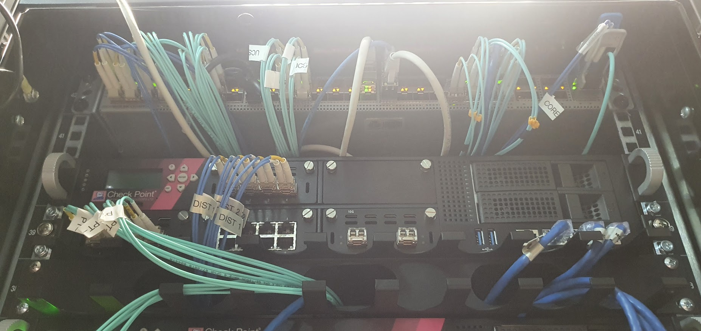
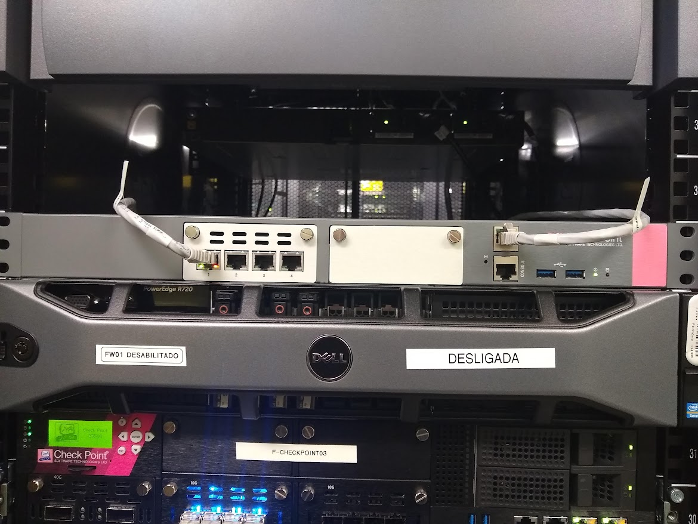

Cybersecurity
Experience supporting the implementation and maintenance of Check Point Firewall, Endpoint Harmony, F5 BIG-IP ASM and Senhasegura solutions.
Cybersecurity • Networking • Web Development
I am an IT professional with experience in cybersecurity, network infrastructure, technical support, web development, digital inclusion and technology education.
My professional background includes Check Point Firewall, F5 BIG-IP ASM, Senhasegura, Nessus, Zabbix, PHP, Laravel, HTML, CSS, Arduino and IoT projects.
About Me
I am a highly motivated and detail-oriented professional with experience in information technology, cybersecurity and education.
I enjoy solving technical problems, supporting users and learning new technologies. I have worked with security tools, network infrastructure, vulnerability reports, technical documentation, online learning platforms and web development.
I am also interested in creating accessible and user-centred technology that can support people with different levels of digital experience.
Learn more about me →
Technology professional with experience in security, infrastructure and education.
What I Do
Experience supporting the implementation and maintenance of Check Point Firewall, Endpoint Harmony, F5 BIG-IP ASM and Senhasegura solutions.
Experience with infrastructure support, equipment inventory, security monitoring, technical documentation and troubleshooting.
Experience teaching programming logic, HTTP, HTML, CSS and fundamental IT concepts to students with different levels of technical knowledge.
Featured Work

A digital inclusion project focused on helping older adults improve their confidence when using computers, mobile devices and online services.
View project →
Participation as an event monitor, supporting participants, teams and collaborative activities during the innovation event.
View project →
Participation in collaborative technology events focused on teamwork, creative thinking, problem-solving and rapid prototyping.
View project →Professional Experience
My professional journey includes roles in infrastructure, cybersecurity, technical support, front-end development and technology education.
I have worked with companies such as ARVVO Tecnologia, Global IP, ISH Tecnologia, Nestin IoT and Alicerce Educação.
View Skills & Experience
Practical experience in cybersecurity, infrastructure, development and technical education.
Certifications
Check Point Certified Security Expert — R80.10
Application Delivery Fundamentals
Product Certification
Technical Knowledge